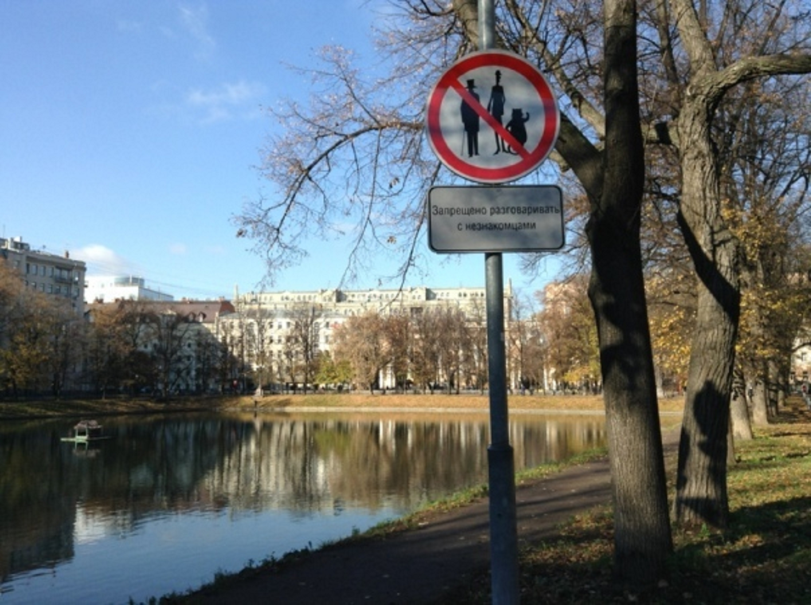

Tvoy Apart 24/7
Апартаменты в центре Москвы — дом с привидениями!! Tvoy Apart 24/7
Официальная аренда апартаментов в царском доме с лепниной! В центре Москвы на Чистых Прудах!
Реальные фото, Договор, Безопасная сделка. Бронь
«Посторонним вход запрещён!»

🏛 Жилое пространство (апартаменты 11 м²)
- Площадь: 11 м² (эргономичная студия)
- Этаж: 1-й этаж (важно: в историческом доме 1892 года лифта нет)
- Потолки: Высокие (~3,1–3,2 м), создают ощущение простора
- Спальное место: Кровать двухуровневая: спальное место 140×195 см (первый уровень), второй уровень — спальное место 195×80 см, матрасы ортопедические, средняя жёсткость
- Вместимость: Макс. 3 взрослых + дети до 3-х лет по согласованию (без доп. места)
- Ванная: 1 совмещённый санузел. Унитаз с функцией биде, мини-раковина, душ, сушилка. Горячая вода — бойлер (круглосуточно)
- Климат: Центральное отопление. Встроенная вентиляция. Окна с жалюзи (тихий двор). Кондиционера нет (в доме прохладно летом за счёт толстых стен)
- Вид из окна: Тихий двор
- Балкон: Нет, но есть доступ в уютный зелёный дворик с зоной отдыха
🍳 Кухня и быт
- Техника: Холодильник с морозилкой, микроволновка (СВЧ), электрочайник с панелью подогрева + заварник
- Важно: Варочной панели (плиты) НЕТ. Формат «лёгкой кухни»: разогрев, завтраки, кофе.
- Посуда: Полный набор (тарелки, чашки, приборы, ножи, доски). Есть справочник рецептов для СВЧ
- Стирка: Стиральная машина в квартире (режимы: деликатный, детский, пар).
- Расходники: Стартовый набор (мыло, шампунь, гель, чай, кофе, сахар, средство для посуды, губка, мешки). При длительном проживании — пополнение по запросу.
- Утюг/Фен: Есть в комплекте + гладильная доска.
💻 Технологии и работа
- Интернет: Wi-Fi 100 Мбит/с (включён в цену). Подходит для видеозвонков.
- ТВ: Смарт-ТВ (YouTube, онлайн-кинотеатры).
- Рабочее место: Стол, удобный стул, розетки, хорошее освещение.
📷 Фотогалерея
📍 Расположение
🗺 Показать на карте — Чистые Пруды
5 · x2 + 5 · x + 2 = 0